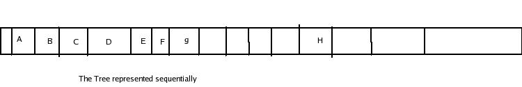
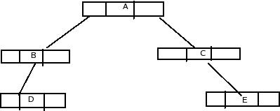

A binary tree can be represented mainly in two ways.
(a)Sequential representation
(b)Linked representation.
Sequential representation uses arrays and linked representation uses Pointers.
SEQUENTIAL[ARRAY]REPRESENTATION:-
The simplest way to represent binary trees in memory is the sequential representation uses a one-dimensional array.The following methods are (a) Th eroot of binary tree is stored in the 1stlocation of array .
(b)If a node is in the jthlocation of array ,then it left child is storedin location(2J) and the right child is location(2J+);
The maximum size that is required for an array to store tree is 2d+1-1,where d is the depth of the tree.

Here the node C at location 3 has left child F at 6th(=2*3) location at the right child at 7th=(2*3+1)location.Since the depth of examples tree is 4.24+1-1=31.
LINKED[POINTER REPRESENTATION]:-
Linked representation of trees in memory is implemented using pointers.Since each node in a binary tree can have maximum two children.a node linked representation has two pointer fields for both left and right child or not information field.If anode does not have any child node then that field is the NULL node.That is the NULL pointer.

In above fig the NULL pointer are shown as cross (x).A binary tree with N node contains N+1 NULL pointers.Each node associated with the info field has the both leftptr,rightptr denote pointers of both left child and rightchild.This type of linked representaion is Nonlinear.